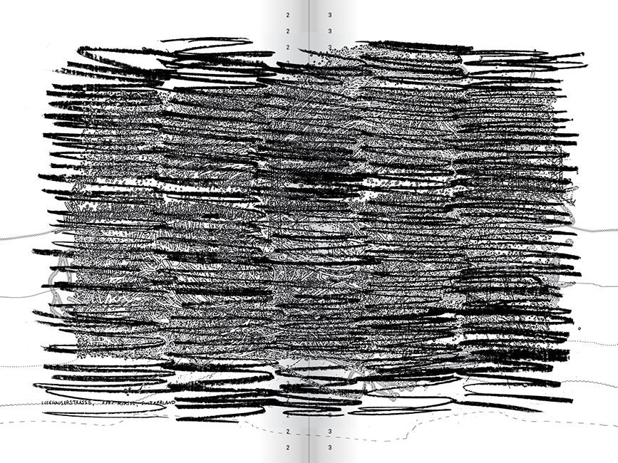
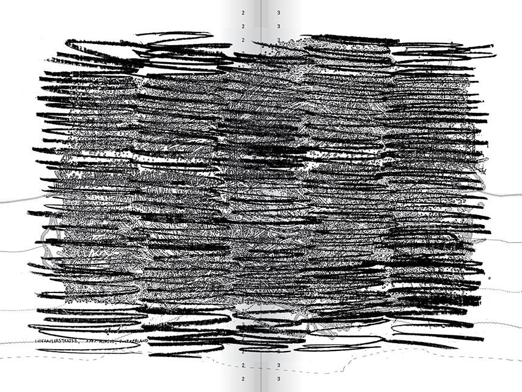
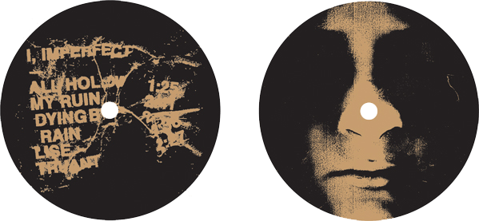
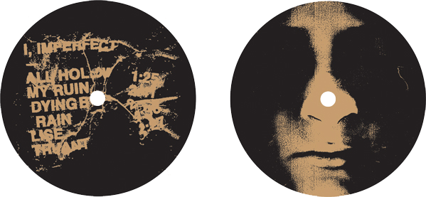

Rory King → Graphic design, etc. → rorykingetc@gmail.com
Writing / Twitter / Instagram / Download CV (PDF)
Currently:
+ Cranbrook Academy of Art, 2D Design MFA candidate → 2017–2019
+ Adjunct Professor at Wayne State University
+ Available for freelance work or collaborations
See Through → 2018“You can’t go on ‘seeing through’ things forever. The whole point of seeing through something is to see something through it. To ‘see through’ all things is the same as not to see.” —C.S. Lewis

Void Posters → 2018Ongoing poster series at Cranbrook Academy of Art

Leather (Goth) Lounge poster → 2018“Dance to express your pain and suffering. Arms at your sides; eyes looking at the ground; drag on your cigarette every three seconds.”


Authenticity Posters → 2018Ongoing poster series at Cranbrook Academy of Art


321 Gallery → 2016–PresentWhat sets 321 Gallery and other small Brooklyn galleries apart from large, big-name galleries is the architecture of their spaces—intimate, cramped, and unexpected. With the gallery's architecture in mind, and 321's DIY approach to a sometimes white-collar profession, I mimicked the actual gallery space by spelling out 321 Gallery along the walls and corners of the gallery’s floorplan, with an image, show title, or website navigation taking the last corner. This lets the “logo” function both vertically and horizontally, with dissonant typography conditionally branding both the gallery and their artists as one entity, drawing out eccentricities that are confrontational and memorable to their audience.


SSSPPPAAACCCEEE (non)conference → 2018Inflatable architecture (in collaboration with Sam Panter) and posters (in collaboration with Lucas Albrecht) for the Space Space Space (non)conference. Space Space Space was a three-day gathering centering around alternative pedagogy, self-organizing, and exploring ways of disrupting the productions of knowledge within academic structures.
 


Process Book → 2018A collection of my writings and visual works, designed to represent my jumbled, intertwined thoughts and opinions.
Review for Step-Brother Gallery → 2018Art criticism leaflet.

Metaphysical Hauntings → 2017Logo for Metaphysical Hauntings webseries.

Pratt Shows: Fashion Ad → 2017Advertisement for the Pratt Institute 2018 fashion show.
Designed at Pratt Institute

Fonts → 2018–PresentOpen source fonts (lol)
The Fund For Pratt (proposal) → 2017Built upon the idea of disseminating Pratt Institute’s curriculum, the new Fund for Pratt campaign turns the fundraising department of Pratt Institute into a producer and publisher while stripping alienating money-talk from its messaging. Periodical direct mail spotlights the work, theories, or criticisms by Pratt alumni, faculty, and students. Essays, manifestos, instructional art, concrete poetry, and much more subvert the expectations of what direct mail can be. The email campaign profiles those same alumni, faculty, and students’ processes and practices. All of these works are then collected on an archival website to be shared with an external Pratt Institute audience. The branding is a simple nomenclature system, allowing the collateral to be a blank canvas for the featured artist/designer/author, while also framing the collateral as documents—or evidence—of a Pratt education and the good it is doing in the world, not exclusively on the Pratt campus.
Designed at Pratt Institute


Unrealized posters for Pratt Institute → 2016–2017
Designed at Pratt Institute


Differentiate by Design 6 → 2016A majority of contemporary art fairs cater more to celebrities and commerce rather than culture. In some cases, disparate and opulent after-parties have become the focus of attending art fairs, creating a void between the audience that is genuinely interested in art and the bogus—and, in some ways, philistine—audience. By using french folds and stock photography, this book tries to convey that void with the exterior of the folds containing hazy collaged banality, and the interior of the folds, which must be ripped open, containing the pertinent writings. The act of ripping open these spreads asks the reader if they are willing to destroy this artistic, yet gaudy, artifact and break down the facade that art fairs have constructed.
Designed at Pratt Institute


Differentiate by Design 5 → 2015The book is printed entirely in black and white to instill within the reader a desire for diversity (i.e., color). Portraits are converted to embossments so that the age, gender, race, or other characteristics of a person influence the text of the current and previous profiles. At the same time, the embossments acknowledge people for their creativity and accomplishments rather than their age, gender, or color of their skin. The typography is typeset as shifting paragraph blocks, conveying how our competitive human nature—the challenge to outperform someone different than ourselves, and the shifting discourse of a diverse workforce—is the science behind how diversity generates creativity within the workplace.
Designed at Pratt Institute


Pratt Shows → 2015The program booklet for Pratt Institute's Pratt Shows 2015 uses a spectrum of colors that begin on one spread and bleed into the next spread to convey the interdisciplinary curriculum and workings of the Institute.
Designed at Pratt Institute

 

New Miseries EP → 2012Artwork and layout for the sleeve, lyric sheet, and center labels of the hardcore band New Miseries — I, Imperfect 7" EP. Cassette and CD versions were also produced.